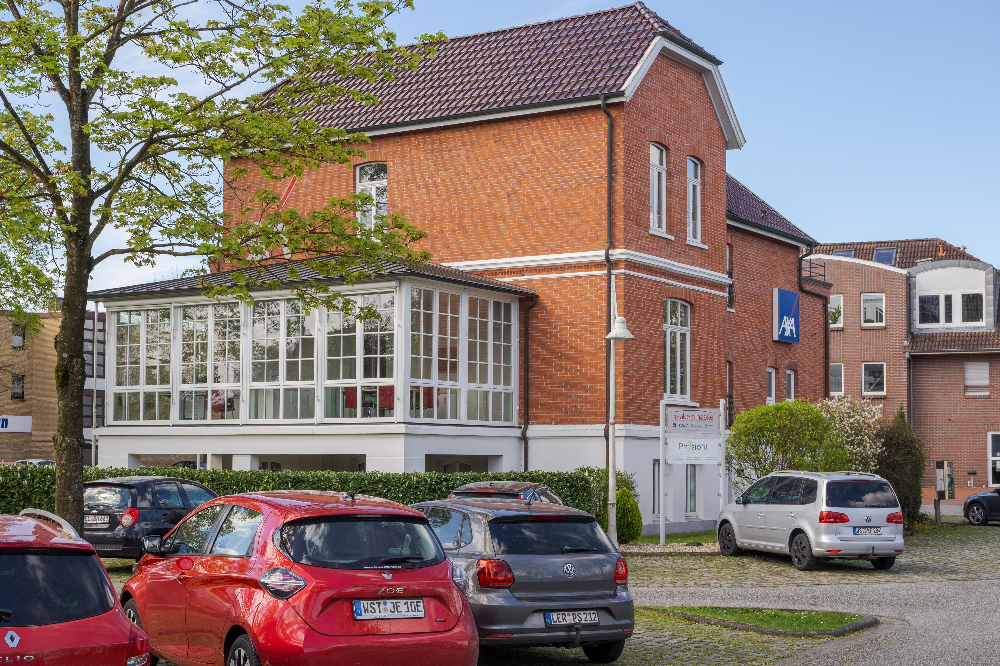

AXA 2030 : un copilote IA pour le réseau commercial
Préparer les rendez-vous, cerner les besoins, mieux accompagner les clients
R5.MDEE.14 Business model 2 · Atelier 1, équipe 2 · M. Ryckebusch
Romane Da Silva, Yoan Bailleul & Sofian Chtioui · BUT3 MDEE · IUT de Roubaix · 17/11/2026
1 / 7
Bonjour à tous. Notre équipe avait pour mission le réseau commercial d'AXA : comment l'intelligence artificielle peut aider un conseiller avant et après un rendez-vous. Notre idée tient en une phrase : un copilote IA qui prépare le rendez-vous, mais qui laisse la décision au conseiller. Nous allons d'abord situer AXA, puis faire le SWOT, le canevas, un cas d'usage avec ses risques et ses indicateurs, et finir sur la valeur nouvelle.
AXA en bref

AXA France
8 millions de clients en France
115,5 Md€de chiffre d'affaires du groupe en 2025
9,79 Md€de résultat net, en hausse de 26 %
31 Md€de chiffre d'affaires pour AXA France
Plusieurs réseaux de distribution
Indépendantsles agents généraux, qui vendent en leur nom
Salariésles conseillers commerciaux de l'entreprise : notre sujet
En ligneDirect Assurance, plus de 2 millions de contrats
Sources : AXA, résultats annuels 2025 ; AXA France, communiqué du 02/03/2026 ; ABC Bourse, 26/02/2026, (consultés le 17/11/2026)
2 / 7
AXA en quelques chiffres, rapidement, parce que le groupe 1 l'a déjà fait. En 2025, le groupe a réalisé 115,5 milliards d'euros de chiffre d'affaires et un résultat net de 9,8 milliards. En France, AXA France pèse 31 milliards et couvre 8 millions de clients. L'important, comme vous l'avez dit, c'est qu'AXA n'est pas une entreprise simple : il y a plusieurs réseaux. Des indépendants, les agents généraux. Des salariés, les conseillers commerciaux, et c'est notre sujet. Et une filiale en ligne, Direct Assurance, avec plus de 2 millions de contrats. Notre problématique : comment aider ces commerciaux avant et après chaque rendez-vous.
Mini-SWOT : l'IA chez AXA
Préconisations1. Un pilote dans une région 2. Bâti sur AXA Secure GPT 3. Le conseiller décide toujours
ForceUn outil d'IA interne et sécurisé, 8 millions de clients
AXA Secure GPT existe déjà (2023) et le réseau génère beaucoup de données utiles au conseil.
FaiblesseDes réseaux très différents, des outils dispersés
Indépendants et salariés n'ont pas les mêmes usages : un copilote unique est difficile à déployer (hypothèse de l'équipe).
OpportunitéL'IA libère du temps commercial
Préparer le rendez-vous et rédiger le compte rendu : le conseiller passe plus de temps avec le client.
MenaceDonnées sensibles, RGPD et règlement européen sur l'IA
Une erreur ou une fuite détruirait la confiance, sur laquelle repose l'assurance.
Sources : AXA France, résultats 2025 ; AXA, AXA Secure GPT (juillet 2023), (consultés le 17/11/2026). Faiblesse : hypothèse de l'équipe.
3 / 7
Notre mini-SWOT. La force : un réseau étendu et 8 millions de clients en France. La faiblesse, qui est une hypothèse de notre équipe : un conseiller perd du temps à retrouver le dossier du client dans plusieurs outils avant chaque rendez-vous. L'opportunité : l'IA générative est aujourd'hui mûre, et AXA a déjà sa propre plateforme sécurisée, AXA Secure GPT, lancée en 2023 sur la technologie d'OpenAI hébergée chez Microsoft. La menace : les données de santé et de patrimoine sont très sensibles, avec le RGPD en toile de fond. Comme vous l'avez rappelé, un SWOT sert à préconiser : nos préconisations : un, lancer le copilote en pilote dans une seule région avant de le généraliser, exactement comme pour BlaBlaCar Flex ; deux, le bâtir sur l'outil interne qu'AXA a déjà, AXA Secure GPT ; trois, laisser toujours la décision au conseiller.
Canevas : AXA Copilote Conseil
Partenaires clés
Microsoft (Azure OpenAI)
Éditeurs d'outils de relation client
Agents généraux et courtiers
CNIL et ACPR (conformité)
Activités clés
Résumer le dossier client, repérer les lacunes de couverture, proposer les bonnes questions, rédiger le compte rendu
Ressources clés
Données clients avec consentement, modèle d'IA sécurisé, équipe données et conformité
Proposition de valeur
Un rendez-vous préparé en quelques minutes et un conseil mieux ajusté aux besoins réels du client.
Le conseiller garde la décision.
Relation client
Conseil humain augmenté, suivi automatique après le rendez-vous
Canaux
Outil intégré à l'application du conseiller, courriel et SMS de suivi
Segments clients
Conseillers et agents généraux (utilisateurs)
Particuliers et TPE (clients conseillés)
Structure de coûts
Calcul cloud et licences, formation des conseillers, sécurité et conformité
Sources de revenus
Pas de vente de l'outil : il reste interne. Le revenu vient du conseiller : plus de contrats signés par rendez-vous, plus de produits par client (vente croisée), moins de résiliations, et du temps commercial libéré.
Source : travail de l'équipe 2, atelier du 17/11/2026, d'après la méthode du Business Model Canvas
4 / 7
Voici notre canevas, avec les neuf briques. Au centre, la proposition de valeur : un rendez-vous préparé en quelques minutes et un conseil mieux ajusté, le conseiller gardant toujours la décision. Les segments : les conseillers et agents généraux, qui utilisent l'outil, et les particuliers et TPE, qui en bénéficient. Les canaux : l'outil est intégré à l'application du conseiller, avec un message de suivi par courriel ou SMS. La relation client reste humaine, mais augmentée. Les activités clés : résumer le dossier, repérer les lacunes de couverture, proposer les bonnes questions, rédiger le compte rendu. Les ressources : les données clients avec consentement, un modèle d'IA sécurisé et une équipe données et conformité. Les partenaires : Microsoft, les éditeurs d'outils, les agents généraux et les autorités comme la CNIL. Côté coûts : le calcul, les licences, la formation et la sécurité. Côté revenus : pas de revenu direct puisque l'outil reste interne, mais plus de contrats signés, plus de produits par client et moins de résiliations.
Un cas d'usage, deux risques
Cas d'usage
Le conseiller prépare, le copilote résume, le client est mieux conseillé
Avant le rendez-vousLe dossier résumé en une page
Contrats, sinistres, changements de vie : trois questions à poser, deux couvertures à vérifier.
Après le rendez-vousLe compte rendu rédigé
Le copilote rédige le compte rendu et le message de suivi, le conseiller relit et envoie.
Risque 1Un conseil faux, dit avec assurance
Garde-fou : le conseiller valide toujours, l'outil cite le dossier et ne propose que la gamme AXA.
Source : travail de l'équipe 2, atelier du 17/11/2026
5 / 7
Un cas d'usage concret. Avant un rendez-vous, le copilote résume le dossier du client, propose trois questions à poser et deux couvertures à vérifier. Après, il rédige le compte rendu et le message de suivi, que le conseiller relit. Deux risques. Premier risque : l'IA peut se tromper et le dire avec assurance. Le garde-fou : le conseiller valide toujours, l'outil montre les éléments du dossier sur lesquels il s'appuie et ne propose que la gamme d'AXA. Deuxième risque : les données personnelles et de santé. Le garde-fou : une plateforme interne sécurisée, le minimum de données, le consentement du client, la traçabilité, et aucune décision automatique.
Trois indicateurs, une valeur nouvelle
Temps de préparationd'un rendez-vous, avant et après le copilote, en minutes
Taux de transformationpart des rendez-vous qui débouchent sur un contrat signé
Satisfaction du clientet nombre de corrections faites par le conseiller
Pour le clientUn conseil qui part de sa situation réelle
Pour le conseillerMoins d'administratif, plus de temps pour écouter
Pour AXAPlus de contrats, des clients fidèles, une IA maîtrisée
Source : travail de l'équipe 2, atelier du 17/11/2026. Données manquantes pour la rentabilité : gain de temps mesuré en pilote, taux d'adoption, coût par conseiller
6 / 7
Trois indicateurs pour mesurer : le temps de préparation d'un rendez-vous, le taux de transformation, c'est-à-dire la part des rendez-vous qui débouchent sur un contrat, et la satisfaction du client, avec le nombre de corrections faites par le conseiller. La valeur nouvelle : pour le client, un conseil qui part de sa situation réelle. Pour le conseiller, moins de préparation administrative et plus de temps pour écouter. Pour AXA, plus de contrats, des clients plus fidèles et une IA maîtrisée. Reste la question de la rentabilité, que vous avez posée sur BlaBlaCar Flex : il nous manque le gain de temps réel mesuré en pilote, le taux d'adoption par les conseillers et le coût par conseiller. C'est pourquoi nous proposons de tester sur une zone restreinte avant d'engager tout le réseau.
Mercide votre attention
7 / 7
Merci de votre attention. Nous sommes prêts pour vos questions.